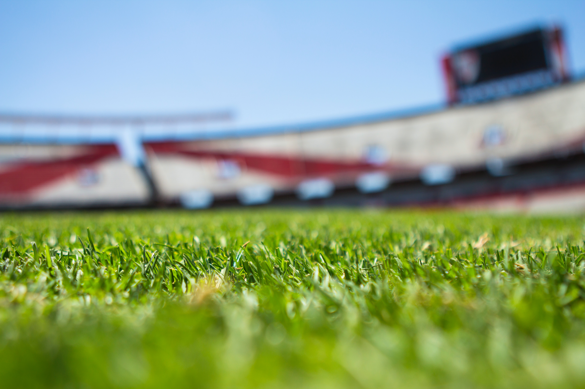

World Cup News
The biggest scoreline in the history of the FIFA World Cup qualifiers\ - and indeed in the history of the international football - was recoreded on 11 April 2001 , when Australia beat American Samoa 31-0
This legendary match also brought global renown for Archie Thomson , whose 13 Goal haul set a new record which stands upto the day , for an individual player in a single international match
And though the defeat earned American Samoa ignomman so inspiring has their subsequent recovery been that is now the subject of the acclaimed documentary , Next Goals Wins showing across the world
Destinations

Belo Horizonte Stadium

Brazallia Stadium

Culliba Stadium